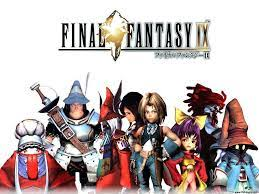
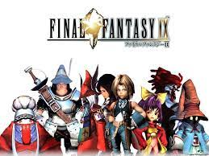
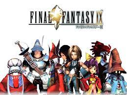
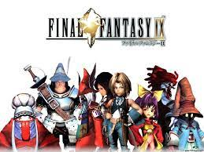

Nobuo Uematsu is a video game music composer and probably the most well known video game music composer in the world. He started video game music for the Final fantasy series from Final Fantasy 1 to final fantasy 10 which is regarded at the end of thge golden age of the Final Fantasy series. Final Fantasy 13 had a different musical composer Masashi Hamauzu who is well respected in his own right. In terms of bringing the franchise to where it is today Nobuo Uematsu has a heavy hand in the task. Some of his best works are Final Fantasy 7, 8, 9 and 10. Nobuo Uematsu has inspired me from a young age and his music inspires me.
Another inspirational Video Game Music composer is Yoko Shimamura, who alongside Nobuo uematsu is a legend for the music in the Kingdom Hearts video game series. She has worked on many Kingdom Hearts titles ranging from Kingdom Hearts 1, Kingdom hearts 358/2 Days, Kingdom Hearts Chain of Memories, Kingdom Hearts 2, Kingdom Hearts Birth by Sleep, Kingdom hearts 3. She has redefined video game music in especially the action genre. During the 90s rpg games were more turn based but now with the new advancements in technology and gaming consoles, action type of ganmeplay has been adopted which Yoko Shimamura has helped in promoting along with Tetsuya Nomura who deserves mentioning. Tetsuya Nomura is a video game designer currently working on the latest remake of Final Fantasy 7 he has a legendary hand in some of the original games such as Final Fantasy 8 one of my favourite games.
Yuki Kaijura is the main conmposer for the music for the Xenosaga video game Franchise she has also had a hand in some very popular anime series such as Fate Stay and Demon slayer. her music is more of an epic tone with violin playing in the background tugging at the emotional strings when watching the anime in which she composed for, that is, fate Stay and Demon Slayer and Xenosaga. Xenosaga is a game in which its story is based in space.Her music has branched off into anime and has exploded in popularity. She is another legend that has touched people hearts in Japanese Role Playing games.
 
